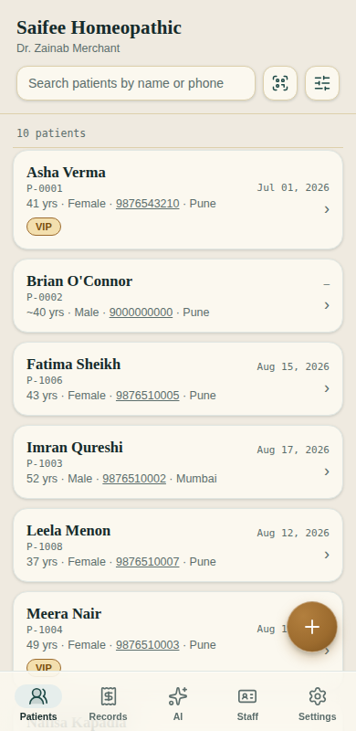
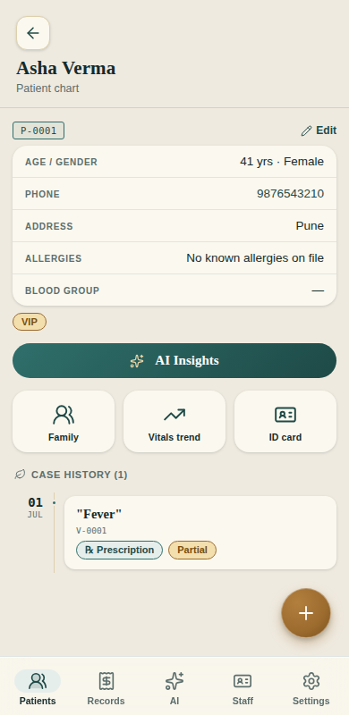

Your clinic keeps running when the internet doesn't.
Patient records, prescriptions and billing on the phone already in your pocket. Register a patient during a power cut, prescribe on a camp day with no signal, and everything syncs the moment you're back.
Set up on your own Firebase account. Most clinics run on the free tier.

Try turning it off.
Not "syncs later". Actually works.
Most clinic software puts up a spinner when the connection drops. Clinic Chart doesn't notice. Every record lives on the device first and travels to the database second — so a bad signal is a delay in syncing, never a delay in seeing a patient.
Prepare for an offline day
Heading somewhere with no signal? One tap pulls the records you'll need onto the device before you leave, so histories are there when you open them.
Nothing gets silently overwritten
If the doctor and the front desk edit the same record while offline, both versions are kept. You're shown them side by side and you choose — no guessing which one won.
You always know where you stand
A visible count of what's still waiting to sync, and a warning before you log out with unsynced changes. The app tells you the truth about its own state.
Register, examine, prescribe, bill.
The whole visit in one flow, built around how a consultation actually runs — not around a database form.
Find or register
Search by name, surname, phone or patient ID. Or scan their QR patient ID card with the camera.
Log the visit
Complaint, diagnosis, vitals and notes. Reusable templates for the visits you write again and again.
Prescribe
Medicines, dosage, frequency and duration from your own saved lists. Prints as a proper PDF.
Bill and send
Receipt with split payments and part payments, tracked against outstanding balances. Send it over WhatsApp.

AI that reads the actual lab report.
Ask about a patient's history and get a summary of patterns across their visits. Attach a photograph of a lab report and it reads the values off the page — not just a note that a report exists.
It does not diagnose, and it does not prescribe. It is a second pair of eyes on your own records, framed as considerations to evaluate, never as an answer. Your clinical judgement is the one that counts. It runs on your own free Google key, it's off until you switch it on, and no AI costs pass through us.
The database is yours, not ours.
Clinic Chart runs on a Google Firebase project created under your own account. Your patient records sit in it. We never hold them, and we can't sell them, lose them, or hold them hostage if you leave.
You hold the keys
The project is created under your Google account and stays there. Access is enforced at the database, not by a login screen we control.
Nobody else's traffic
Your storage and daily usage are yours alone. Another clinic having a busy Monday has no effect on yours, because you aren't sharing anything with them.
Leaving takes nothing away
Stop working with us and you keep the project and every record in it. Export the whole clinic to a file whenever you want, without asking.
Software that keeps a record of its own mistakes.
Most software sold to small clinics has no visible engineering story at all. Ours is written down. Every release documents what broke, why it broke, and what stops it happening again — including the times a test turned out to be checking nothing.
Every guard is watched failing
A test that checks something didn't happen is run against a broken build first, to prove it can fail. A test that can't fail isn't a test.
Nothing loaded from elsewhere
No analytics, no trackers, no third-party CDN. The app works with no connection precisely because it depends on nothing it doesn't ship with.
Runs on the phone you own
Installs like an app, no app store, no per-device licence. Works on a mid-range Android as well as it works on anything else.
You pay us for the setup, not a seat.
Google's free tier covers 1 GB of records and 50,000 database reads a day. For a clinic seeing thirty or forty patients a day, that's years of case history without paying Google anything.
A very busy practice will eventually pass those limits. When that happens the cost is measured in cents a month, not in a per-doctor subscription — and it's billed to your account by Google, not marked up by us.
What you pay us is one-off: setting up your Firebase project, moving your existing patient records across, and training your front desk. After that we're here when you need us.
No per-user pricing, no per-device licence, no lock-in. Add a receptionist without adding a bill. If you ever stop working with us, the software keeps running and your records stay yours.
Questions worth asking.
What happens to my records if I stop using Clinic Chart?
You keep them. The Firebase project belongs to your Google account, so we can't take it away — and the app has a full export that writes every patient, visit, prescription and receipt to a file you hold. Nothing about leaving requires our cooperation.
Is it compliant with India's data protection law?
Not yet, and we won't claim otherwise. The DPDP Rules were notified in November 2025 and the obligations that affect clinics take effect in May 2027. We're building towards them — consent capture, access logging, and the handling of patient requests — and we'll be straight with you about where we are. Anyone selling you clinic software that claims full compliance today is worth a second look.
What if two people edit the same patient at once?
Both versions are kept and you're shown them side by side to choose between. Nothing is silently overwritten. This matters most offline, when two devices can't see each other's changes until they reconnect.
Do I need internet to set it up?
For the initial setup, yes — the clinic's database has to be created and your staff accounts added. After that, day-to-day work doesn't need a connection.
How many patients can it handle?
Search covers your whole patient list however large it gets. Storage is the practical limit: 1 GB is comfortably several years for a clinic seeing thirty to a hundred patients a day. We'll size it honestly with you before you commit, based on your actual volume.
Can my receptionist use it without seeing clinical notes?
Yes. Receptionists can register patients and handle billing; clinical records and the AI assistant are restricted to doctors. The restriction is enforced by the database itself, not just hidden in the interface.
Does it work on iPhone and Android?
Both, and on a desktop browser. It installs to the home screen like an app, with no app store and no separate download.
See it running on your own phone.
Tell us roughly how many patients you see a day and what you're using now. We'll show you the app with realistic records in it, and be honest about whether it's a fit.
No signup, no trial account, no card. Just a conversation.